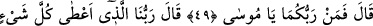
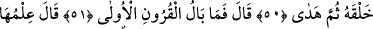
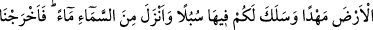
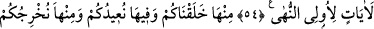
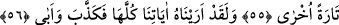

ALLAH NE YANILIR
NE DE UNUTUR
49. Fir’avn: “Rabbiniz de kimmiş, ey Mûsâ?” dedi.
50. O da: “Bizim Rabbimiz, her şeye hilkatini (varlık ve özelliğini) veren, sonra
da doğru yolu gösterendir.” dedi.
51. Fir’avn: “Öyle ise, önceki milletlerin hali ne olacak?” dedi.
52. Mûsâ: “Onlar hakkındaki bilgi, Rabbimin yanında bir kitapta bulunur.
Rabbim, ne yanılır ne de unutur.” dedi.
53. O, yeri size beşik yapan ve onda size yollar açan, gökten de su indirendir.
Onunla biz çeşitli bitkilerden çiftler çıkardık.
54. Yiyiniz; hayvanlarınızı otlatınız. Şüphesiz bunda akıl sahipleri için (Allâh’ın
kudretine) işaretler vardır.
55. Sizi ondan (topraktan) yarattık; yine sizi oraya döndüreceğiz ve bir kez daha
sizi ondan çıkaracağız.
56. Andolsun biz ona (Fir’avn’a) bütün (bu) delillerimizi gösterdik; yine de
yalanladı ve diretti.
Kâşifî şöyle der: “Mûsâ ve Hârun (a.s.) ilâhî hüküm gereğince Fir’avn’un sarayına
vardılar. Onunla görüşmeleri mümkün olduktan bir müddet sonra “Biz Rabbimiz’in
elçileriyiz. Seni O’na ibâdete dâvet ederiz” dediler. Hak Teâlâ’nın kendilerine
vahyettiği sözleri ona tebliğ ettiler. Bunun üzerine” “Fir’avn: Rabbiniz de kimmiş, ey
Mûsâ? dedi.” Yâni, eğer siz Rabbinizin iki peygamberi iseniz, sizi bana gönderen
Rabbinizden haber verin, o kimdir? Onlar her ne kadar “Biz senin Rabbinin
elçileriyiz” dedilerse de, Fir’avn “Benim Rabbim kimdir?” demedi. Bunun sebebi onun
azgınlık ve sapıklıkta çok ileri gitmiş olmasındandır.